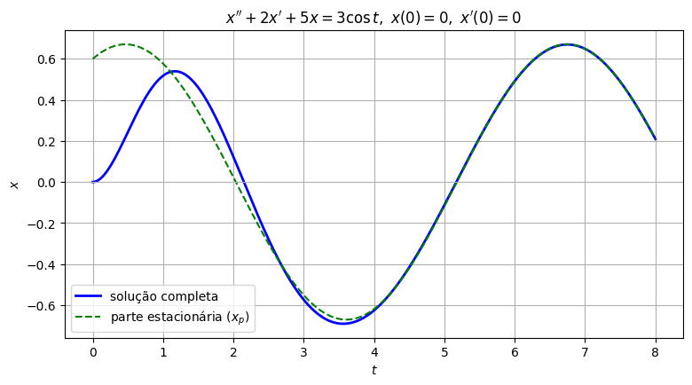
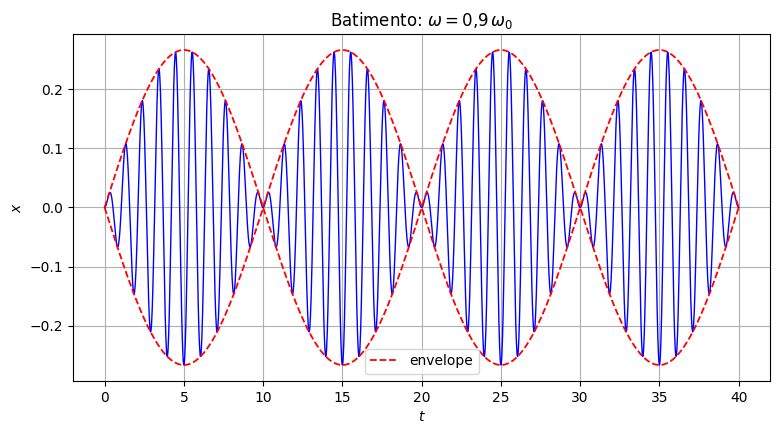
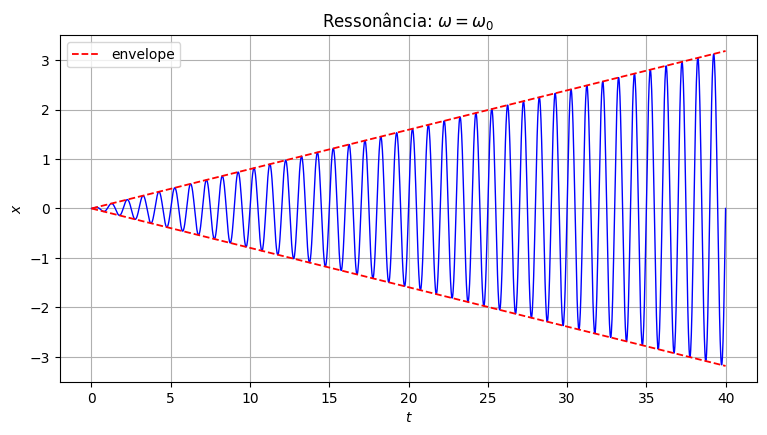
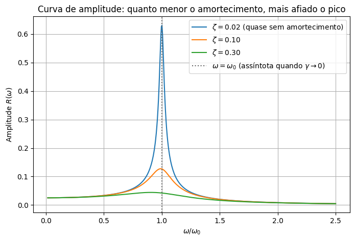

Vibrações Forçadas#
Já entendemos as vibrações livres (todos os regimes, ditados pelo discriminante) e já sabemos resolver equações não homogêneas com o método dos coeficientes a determinar. Chegou a hora de juntar tudo: vamos forçar o oscilador com a força harmônica mais natural que existe,
e ver o que acontece. Vamos em duas partes: primeiro com amortecimento, depois sem.
Parte 1: vibração amortecida forçada#
Vamos resolver um exemplo com números concretos, prestando atenção em dois fatos que — já adianto — vão se revelar completamente gerais.
Um exemplo com contas#
Resolva
Homogênea associada: \(r^2+2r+5=0 \Rightarrow r=-1\pm2i\), então \(x_h=e^{-t}(c_1\cos2t+c_2\,\text{sen}\,2t)\) — subamortecida.
Solução particular: tentativa \(x_p=A\cos t+B\,\text{sen}\,t\) (sem risco de ressonância, já que \(\omega=1\neq\mu=2\)). Substituindo e agrupando:
Solução geral: \(x(t)=e^{-t}(c_1\cos2t+c_2\,\text{sen}\,2t) + \dfrac35\cos t+\dfrac{3}{10}\,\text{sen}\,t\). Usando as condições iniciais (contas de sempre): \(c_1=-\tfrac35\), \(c_2=-\tfrac{9}{20}\).
import sympy as sp
import numpy as np
import matplotlib.pyplot as plt
t = sp.symbols('t', real=True)
c1, c2 = sp.Rational(-3, 5), sp.Rational(-9, 20)
x = sp.exp(-t)*(c1*sp.cos(2*t) + c2*sp.sin(2*t)) + sp.Rational(3, 5)*sp.cos(t) + sp.Rational(3, 10)*sp.sin(t)
print("Resíduo:", sp.simplify(sp.diff(x, t, 2) + 2*sp.diff(x, t) + 5*x - 3*sp.cos(t)))
print("x(0) =", x.subs(t, 0))
print("x'(0) =", sp.diff(x, t).subs(t, 0))
t_vals = np.linspace(0, 8, 400)
x_vals = np.exp(-t_vals)*(-0.6*np.cos(2*t_vals) - 0.45*np.sin(2*t_vals)) + 0.6*np.cos(t_vals) + 0.3*np.sin(t_vals)
x_estacionaria = 0.6*np.cos(t_vals) + 0.3*np.sin(t_vals)
plt.figure(figsize=(9, 4.5))
plt.plot(t_vals, x_vals, 'b', linewidth=2, label='solução completa')
plt.plot(t_vals, x_estacionaria, 'g--', linewidth=1.5, label='parte estacionária ($x_p$)')
plt.axhline(0, color='0.7', linewidth=0.8)
plt.title(r"$x''+2x'+5x=3\cos t,\ x(0)=0,\ x'(0)=0$")
plt.xlabel("$t$"); plt.ylabel("$x$")
plt.legend()
plt.grid(True)
plt.show()
Resíduo: 0
x(0) = 0
x'(0) = 0

Repare em dois fatos, bem visíveis no gráfico:
A parte da homogênea, \(e^{-t}(\ldots)\), desaparece conforme \(t\) cresce — depois de pouco tempo, a solução completa gruda na curva verde tracejada.
Essa curva verde, a solução particular, é uma onda pura na frequência da força (\(\omega=1\), não a frequência natural \(\mu=2\)!) — um cosseno defasado.
Chamamos \(x_p\) de solução estacionária (ou de regime permanente): é o que sobra depois de “esquecido” o passado, e depende só da força aplicada, não da condição inicial.
Chamamos \(x_h\) de solução transiente: carrega a “memória” da condição inicial e da natureza intrínseca do sistema (a equação homogênea), mas se dissipa com o tempo.
Isso não foi coincidência dos números escolhidos. Para quaisquer \(m,\gamma,k>0\) (e qualquer um dos três casos do discriminante, sub, crítico ou superamortecido), o mesmo padrão se repete:
\(x_h\to0\) quando \(t\to\infty\), porque a parte real de toda raiz é \(-\gamma/(2m)<0\) sempre que \(\gamma>0\) (confira nas três fórmulas gerais da aula de vibrações livres).
\(x_p\) é sempre uma onda pura na frequência de forçamento \(\omega\), com amplitude e fase que dependem de \(m,\gamma,k,\omega\):
Parte 2: vibração não amortecida forçada — batimento e ressonância#
Agora tiramos o amortecimento (\(\gamma=0\)): a homogênea deixa de morrer, e a interação entre a frequência natural \(\omega_0=\sqrt{k/m}\) e a frequência de forçamento \(\omega\) vira o centro das atenções.
Usando a fórmula geral da Parte 1 com \(\gamma=0\) temos:
(supondo \(\omega\neq\omega_0\)). A homogênea é \(x_h=c_1\cos\omega_0t+c_2\,\text{sen}\,\omega_0t\).
Aplicando as condições iniciais \(x(0)=x'(0)=0\) (contas de sempre): \(c_1=-\dfrac{F_0}{m(\omega_0^2-\omega^2)}\), \(c_2=0\).
Logo,
Usando a identidade trigonométrica \(\cos A-\cos B=-2\,\text{sen}\!\left(\frac{A+B}{2}\right)\text{sen}\!\left(\frac{A-B}{2}\right)\):
Quando \(\omega\) está perto de \(\omega_0\):
O segundo fator, \(\text{sen}\big(\frac{\omega_0+\omega}{2}t\big)\), oscila rápido (frequência próxima de \(\omega_0\)), é a “portadora”.
O primeiro fator, \(\text{sen}\big(\frac{\omega_0-\omega}{2}t\big)\), oscila devagar (frequência pequena, já que \(\omega_0-\omega\approx0\)), é o envelope, que modula lentamente a amplitude da portadora.
Esse é o fenômeno do batimento.
w0_s, w_s, m_s, F0_s, t_s = sp.symbols('omega_0 omega m F_0 t', positive=True)
x_bat = F0_s/(m_s*(w0_s**2 - w_s**2)) * (sp.cos(w_s*t_s) - sp.cos(w0_s*t_s))
m_, k_ = 1.0, (2*np.pi)**2
w0 = np.sqrt(k_/m_)
w_bat = 0.9*w0
F0 = 1.0
t_vals = np.linspace(0, 40, 2000)
x_vals = F0/(m_*(w0**2 - w_bat**2)) * (np.cos(w_bat*t_vals) - np.cos(w0*t_vals))
envelope = np.abs(2*F0/(m_*(w0**2 - w_bat**2)) * np.sin((w0 - w_bat)*t_vals/2))
plt.figure(figsize=(9, 4.5))
plt.plot(t_vals, x_vals, 'b', linewidth=1)
plt.plot(t_vals, envelope, 'r--', linewidth=1.3, label='envelope')
plt.plot(t_vals, -envelope, 'r--', linewidth=1.3)
plt.title(r"Batimento: $\omega=0{,}9\,\omega_0$")
plt.xlabel(r"$t$"); plt.ylabel(r"$x$")
plt.legend()
plt.grid(True)
plt.show()

O limite de ressonância, via L’Hôpital#
O que acontece com essa fórmula quando \(\omega\to\omega_0\), ou seja, quando a força é aplicada exatamente na frequência natural? Olhando para
conforme \(\omega\to\omega_0\), tanto o numerador quanto o denominador tendem a \(0\), levando a uma indeterminação \(0/0\).
Assim, podemos aplicar a regra de L’Hôpital (derivando em relação a \(\omega\), com \(t\) fixo):
Logo,
Repare: é exatamente a forma \(t\,\text{sen}(\omega_0t)\) que já tínhamos encontrado pelo método dos coeficientes a determinar, no caso de ressonância.
Confira com o Exemplo 7 da aula passada: lá tínhamos \(m=1,\ F_0=1,\ \omega_0=2\), e a fórmula acima dá \(x_p=\frac{1}{4}t\,\text{sen}(2t)\), exatamente o que encontramos.
As duas estradas (o limite do batimento, e o “”chute”” \(t(A\cos\omega_0t+B\,\text{sen}\,\omega_0t)\)) chegam ao mesmo lugar.
expr = (sp.cos(w_s*t_s) - sp.cos(w0_s*t_s)) / (w0_s**2 - w_s**2)
limite = sp.limit(expr, w_s, w0_s)
print("Limite quando ω→ω₀:", limite)
print("x_p no limite:", sp.simplify((F0_s/m_s)*limite))
t_vals = np.linspace(0, 40, 2000)
x_res = F0/(2*m_*w0) * t_vals * np.sin(w0*t_vals)
plt.figure(figsize=(9, 4.5))
plt.plot(t_vals, x_res, 'b', linewidth=1)
plt.plot(t_vals, F0*t_vals/(2*m_*w0), 'r--', linewidth=1.3, label='envelope')
plt.plot(t_vals, -F0*t_vals/(2*m_*w0), 'r--', linewidth=1.3)
plt.title(r"Ressonância: $\omega=\omega_0$")
plt.xlabel("$t$"); plt.ylabel("$x$")
plt.legend()
plt.grid(True)
plt.show()
Limite quando ω→ω₀: t*sin(omega_0*t)/(2*omega_0)
x_p no limite: F_0*t*sin(omega_0*t)/(2*m*omega_0)

A curva de amplitude e a “”assíntota”” da ressonância#
Voltando à fórmula geral (com amortecimento) da Parte 1:
O que acontece com essa amplitude quando \(\gamma\) fica cada vez menor? No limite \(\gamma\to0\) e \(\omega\to\omega_0\), o denominador vai a zero e \(R\to\infty\); a “explosão” da ressonância que acabamos de calcular é, na verdade, o caso limite de um pico de amplitude que fica cada vez mais alto e mais estreito à medida que o amortecimento diminui.
Vamos reproduzir aquele gráfico clássico que já apareceu, de relance, lá em “Por que Equações Diferenciais”:
omega = np.linspace(0.1, 2.5*w0, 500)
plt.figure(figsize=(8, 5))
for zeta, label in [(0.02, r"$\zeta=0.02$ (quase sem amortecimento)"),
(0.10, r"$\zeta=0.10$"),
(0.30, r"$\zeta=0.30$")]:
gam = zeta*2*np.sqrt(k_*m_)
amp = F0/np.sqrt((k_ - m_*omega**2)**2 + (gam*omega)**2)
plt.plot(omega/w0, amp, label=label)
plt.axvline(1, color='0.4', linestyle=':', label=r'$\omega=\omega_0$ (assíntota quando $\gamma\to0$)')
plt.xlabel(r"$\omega/\omega_0$")
plt.ylabel(r"Amplitude $R(\omega)$")
plt.title(r"Curva de amplitude: quanto menor o amortecimento, mais afiado o pico")
plt.legend()
plt.grid(True)
plt.show()

Fechando o capítulo#
Com isso, fechamos o círculo completo das EDOs lineares de segunda ordem: modelagem, homogêneas (nos três casos), a teoria geral, vibrações livres, o método dos coeficientes a determinar, e agora vibrações forçadas, com batimento e ressonância explicados de ponta a ponta, com fórmulas exatas por trás de cada gráfico que só tínhamos simulado numericamente lá no começo do capítulo.
Ainda fica pendente a variação de parâmetros (para quando \(F(t)\) não se encaixa na tabela de coeficientes a determinar), um tema para retomar mais adiante.